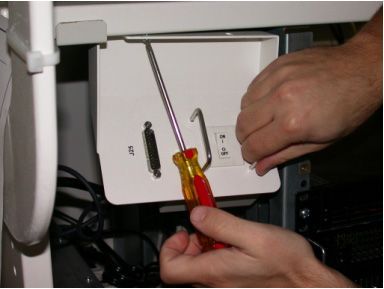

Home >
GEMS Proprietary Class: A
Direction 5134798-800, Rev# 1
Home > | GEMS Proprietary Class: A |
“PathFinder” delivers left and right fan subassemblies that deliver more cooling to the console.
Unplug the two fan power cables from the outlet box. See Illustration 1.
Snip all tie-wraps securing the fan assembly power cables for left and right power wires.
Illustration 1: Existing Fan Assembly

From the front of the console reach into the right side of the console, remove and retain the four screws that are securing the fan assembly.
Snip all tie-wraps that are securing the fan assembly power cables.
Snip power wires to the fan assembly as shown in Illustration 2.
Discard the Fan Assembly.
From the front of the console pull the power cord out of the console and discard.
Illustration 2: Power Wires to the Fan Assembly

If your system has three IGs temporarily remove the top two to gain access to the left side fan assembly screws. Follow the GRE IG Parts replacement procedures, if necessary.
To gain access to the left side fan assembly screws remove the Console power switch assembly. See Illustration 3.
From the front of the console reach into the left side of the console remove and retain the four screws that are securing the fan assembly.
| NOTE: | You may need a snub nose Phillips screwdriver to remove the lower screw. |
Snip power wires to the fan assembly. See Illustration 2.
Discard the removed fan assembly.
From the front of the console pull the power cord out of the console and discard.
Illustration 3: Front Panel Switch

From the rear of the console, align the right-side fan mounting bracket with the chassis holes and prop in place using tie-wraps, or other means.
From the front of the console, reach into the right-side of the console. Using the screws retained from the old fan removal, attach the new fan assembly using the four mounting bracket holes pointed out in Illustration 4.
Illustration 4: Fan Assembly

From the rear of the console, thread the left-side fan assembly behind the existing cables (e.g. network, power).
Run the fan power cable through the left-side of the console up to the power outlet box.
Align the left-hand side fan mounting bracket with the chassis holes and prop in place using tie wraps, or other means.
From the front of the console, reach into the left-side of the console, and using the screws retained from the old fan removal, attach the new fan assembly using the four holes pointed out in Illustration 4.
Tie-wrap the rear power cables down neatly to other cables.

|